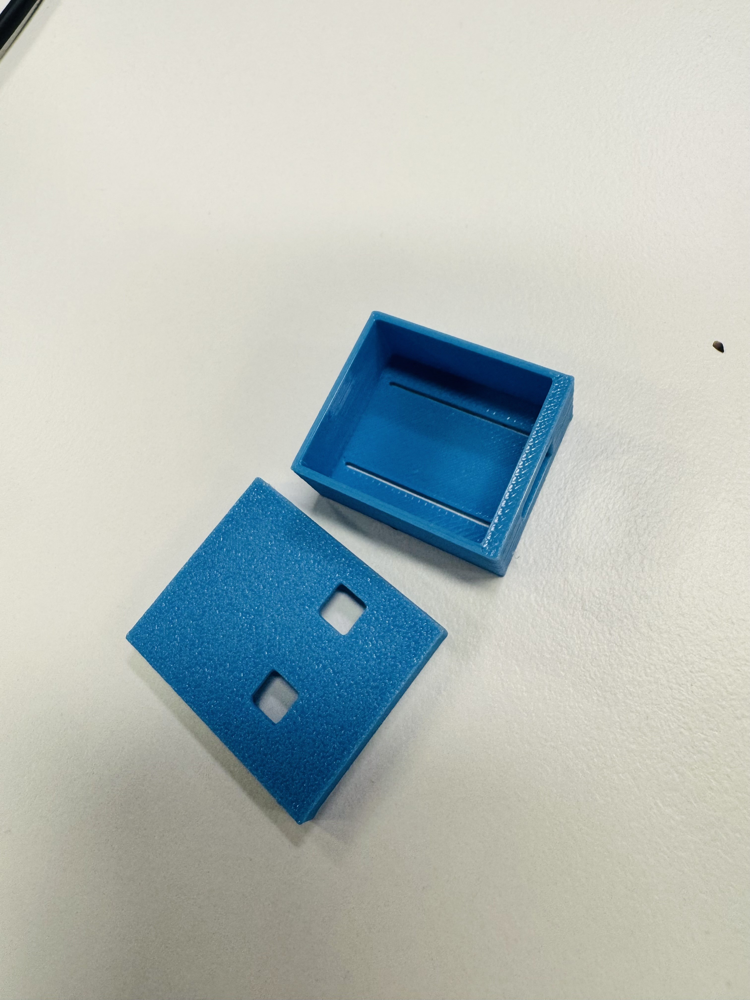

Stage 02 of 03
Prototype 2
An improved iteration addressing the fit, ventilation, and accessibility issues found in Prototype 1.

[ prototype2.jpg ]Add your photo hereOverview
Key features
Prototype 2 was a significant redesign. Using feedback from Prototype 1 testing, the CAD model was updated to address every identified issue before printing a second physical version.
- Tighter board tolerances — 0.2 mm clearance on all sides
- Horizontal vent slots added to both side walls
- USB-C port opening cut into the base end wall
- Boot and reset button cutouts added to lid
- Snap-fit clip mechanism replacing friction fit
What changed and why
Changes from Prototype 1
| Issue in Prototype 1 | Change made in Prototype 2 | Reason |
|---|---|---|
| Board too loose inside case | Reduced inner cavity to 0.2 mm tolerance | Prevents movement and vibration damage |
| No ventilation | Added 4 side vent slots (1 mm × 8 mm) | Reduces heat build-up during operation |
| USB-C port blocked | Cut 10 mm × 4 mm opening in end wall | Allows charging and programming without opening case |
| Buttons inaccessible | Added 3 mm circular cutouts above each button | Allows boot and reset buttons to be pressed normally |
| Lid too tight | Added two snap-fit clips with 0.5 mm flex gap | Easier to open while keeping lid secure |
Evaluation
Pros & cons
Advantages
- Board now sits firmly with no movement
- USB-C accessible without disassembly
- Buttons can be used with case closed
- Ventilation noticeably improved
Remaining problems
- Snap-fit clips slightly too flexible — lid can pop off
- Vent slots could be wider for better airflow
- Print supports left rough marks on vent areas
- Antenna window not yet added — affects Wi-Fi range
Planned improvements for the Final Design:
Stiffen the snap-fit clips by increasing wall thickness at the clip base. Widen vent slots and add a honeycomb pattern for better airflow with less material. Add a small recessed window above the antenna area to improve Wi-Fi performance. Redesign lid geometry to eliminate the need for print supports.
Stiffen the snap-fit clips by increasing wall thickness at the clip base. Widen vent slots and add a honeycomb pattern for better airflow with less material. Add a small recessed window above the antenna area to improve Wi-Fi performance. Redesign lid geometry to eliminate the need for print supports.